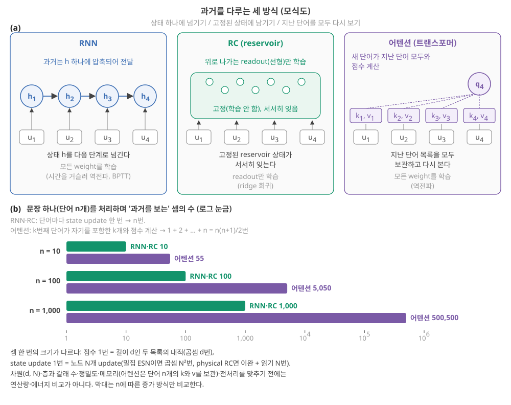
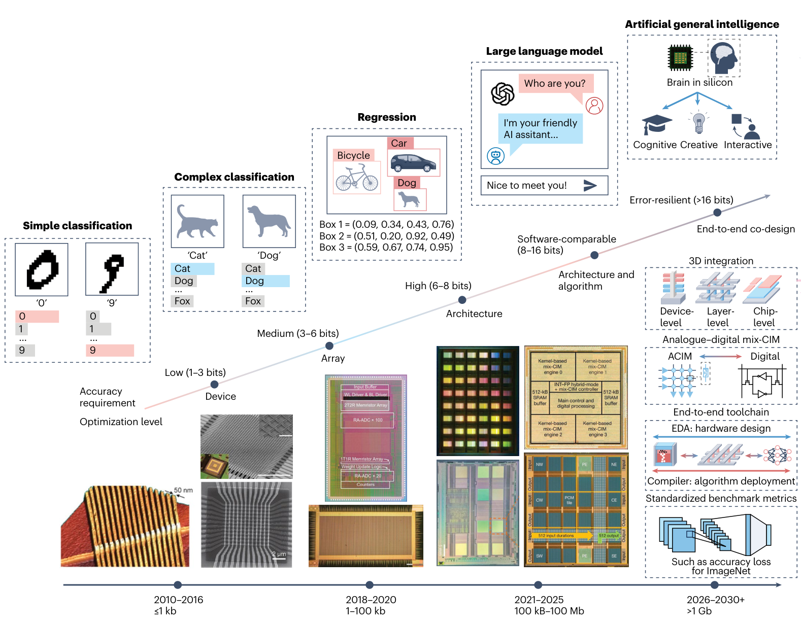
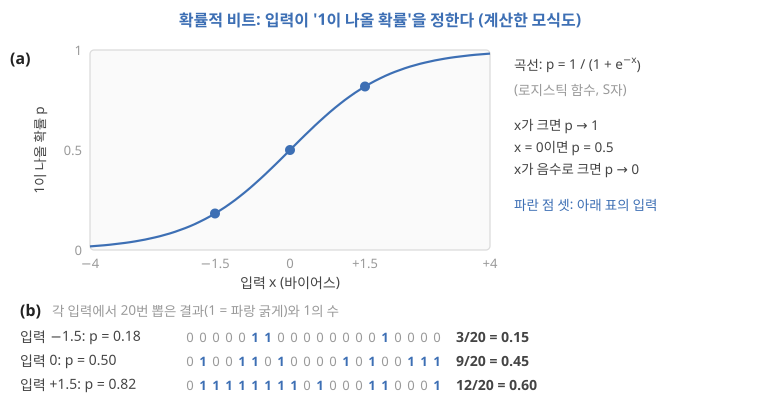
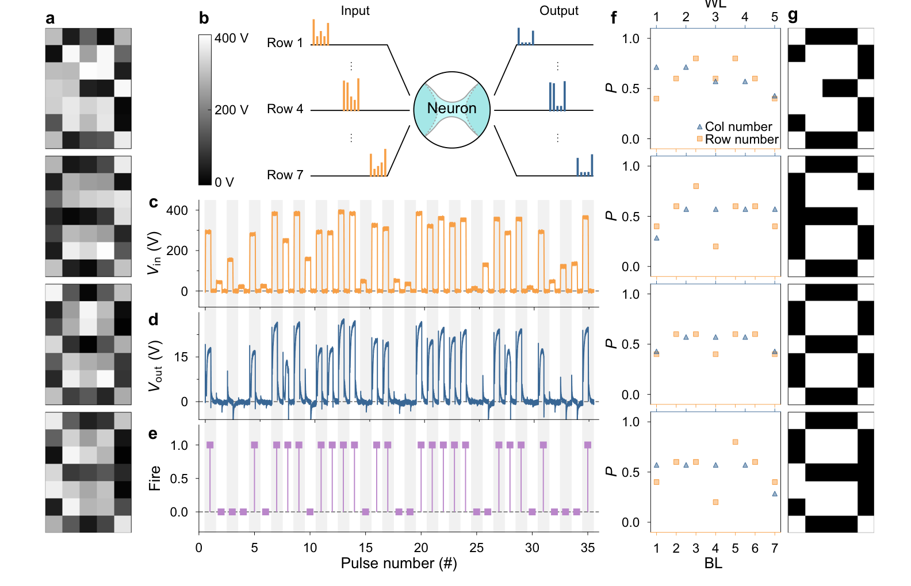
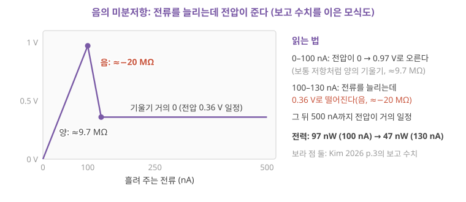
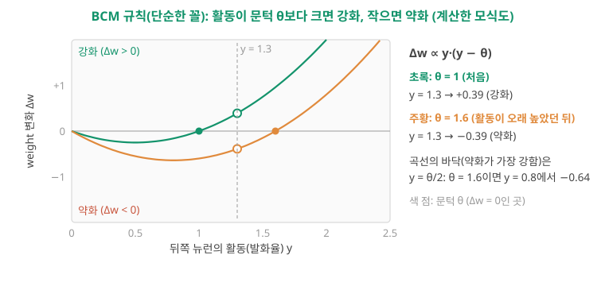
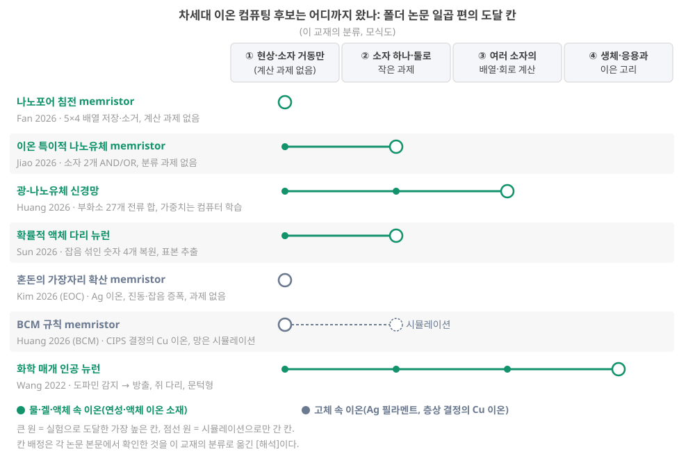

Day 58. 한 장 정리와 (선택) 결정 · 확장 읽기: RNN·reservoir computing·attention, 차세대 후보
Phase 5 · 나는 무엇을 연구해야 하는가
이번 질문 배운 사슬을 한 장과 측정 질문 하나로 어떻게 닫고, (선택) reservoir computing·attention·차세대 이온 컴퓨팅은 어디에 서나?
왜 배우나 (내 소재 연구와의 연결) 이번 단위의 필수는 마지막 절(배운 사슬 한 장 + 내 소재에서 측정할 질문 하나, 출발점과의 비교)이고, 그 앞의 확장 읽기(확률적 계산·국소 학습·물리 어텐션)는 이온 소재로 새 가설을 세울 때 돌아올 지도입니다. 내 device의 측정값(τ, endurance, 확률적 응답)이 어느 후보의 요구와 맞는지 비교하는 눈을 줍니다.
오늘의 장면 (입력 → 내부 변화 → 출력) RNN·RC·어텐션: 입력열 → 과거를 어디에 남기나(상태 하나 / 고정된 상태 / 단어 목록 전체) → 과거를 보는 셈 n 대 n(n+1)/2. 물리 device: 입력 × 고정 weight(crossbar에 한 번 써 둠) vs 입력 × 입력(단어마다 새로 써야 함) → endurance 10² vs 10⁹ 비교. 마무리: 총정리 표 → 질문 한 줄.
오늘 반드시 핵심: 배운 사슬을 한 장으로 정리하고 내 소재에서 측정할 질문 하나를 쓴다. 이온 device로 어텐션의 입력 × 입력 곱셈을 하려면 단어마다 써야 해서 endurance 한계(10² 회 대 10⁹–10¹² 회)와 부딪힌다. 이것은 확장 읽기에서 얻는 한 줄이다.
나중에 더 봐도 되는 것 확장 읽기 전체: 커널 근사, 시도 표의 논문들, 확률적 비트·음의 미분저항·BCM의 작은 숫자 계산, 후보 지도. 결정 양식의 일곱 단계도 선택입니다. 핵심만 마치려면 마지막 절(결정 적기와 회고)과 총정리로 바로 가면 됩니다.
다음으로 넘어가는 기준 '오늘 반드시'를 내 말로 한두 문장 말할 수 있으면 됩니다. 나머지는 뒤의 Day에서 다시 나옵니다.
이후 쓰이는 곳 (선택) 결정과 다시 볼 날짜, 첫 최소 실험 고르기, 이온 소재로 확률적 계산·국소 학습 같은 새 가설을 세울 때
지난 학습 복습
지난 학습 단위(Day 57 · 결정의 틀(핵심 마무리)과 트랜스포머·어텐션(확장 읽기))의 핵심을 다른 예로 확인합니다. 고르는 즉시 맞았는지와 이유가 보입니다. 틀려도 아래 학습자료는 그대로 열려 있고, 틀린 문제에는 다시 볼 곳이 붙습니다.
학습자료
4. RNN·RC·어텐션의 차이, 그리고 물리 device로 어텐션을 할 수 있나
상황. 논문 초록이 "attention 기반 neuromorphic 하드웨어"를 내세웁니다. 이온 소재로 같은 일을 하려면 어떤 곱셈을 device가 해야 하고, 그 곱셈이 내 device의 어느 한계(쓰기 횟수)와 부딪힐까요? 이 구간은 그 판단 재료입니다.
끝나면 할 수 있는 것. RNN·RC·어텐션이 과거를 다루는 방식과 계산량을 숫자로 비교하고, 물리 device·RC로 트랜스포머를 구현하려는 시도가 무엇을 보였는지(고정 weight 곱셈 / 단어마다 바뀌는 어텐션 곱셈 / RC + 어텐션)를 출처와 함께 구별하며, 이온 device가 특히 어려운 이유를 endurance 숫자로 말할 수 있다.
확장 읽기(계속). 이 절과 다음 절은 attention·차세대 후보 논문을 읽을 때 다시 펼치는 보충입니다. 핵심 과정만 마치려면 이 두 절을 건너뛰고 결정 적기와 회고와 총정리로 가도 됩니다.
세 방식의 과거 다루기: 그림부터. 앞 절에서 어텐션을 손으로 계산했습니다. 짧게 다시 말하면, 새 단어의 질문과 지난 단어들의 꼬리표를 내적해 점수를 내고, softmax로 무게를 만들어 내용을 섞었습니다(어텐션 한 번을 손으로). 이제 같은 "과거 다루기"를 RNN, RC와 나란히 놓습니다.
그림 4의 읽는 법: (a)의 세 패널에서 u1…u4는 차례로 들어오는 단어(입력)이고, 왼쪽 RNN의 h는 상태, 가운데 RC의 동그라미는 고정된 reservoir의 노드, 오른쪽의 q·k·v는 질문·꼬리표·내용입니다. 패널마다 과거가 어디에 남는지(상태 하나 / 고정된 상태 / 단어 목록 전체)와 무엇을 학습하는지를 견주어 보세요. (b)의 막대는 다음 단락의 숫자입니다.

- RNN((a) 왼쪽): Day 11–12을 짧게 다시 말하면, RNN은 상태 \(h\)를 다음 단계로 넘기며 과거를 그 상태 하나에 압축하고, 모든 weight를 시간을 거슬러 올라가는 역전파(BPTT)로 학습해야 해서 학습이 어려웠습니다(Day 11: 시계열과 순환 신경망: 상태를 다음 단계로 넘긴다).
- RC((a) 가운데): RNN의 안쪽을 고정하고 readout만 학습해 어려움을 피했고, 대가로 과거는 고정된 상태에 서서히 잊히며 남았습니다(fading memory, Day 15 기초).
- 어텐션((a) 오른쪽): 셋째 길입니다. 지난 단어들의 꼬리표와 내용을 모두 보관해 두고, 새 단어마다 그 전부를 다시 봅니다. 잊지 않는 대신 보관할 것이 문장 길이만큼 늘고, 볼 때마다 계산이 듭니다.
어텐션에는 순서가 들어 있지 않다. 앞 절의 계산(내적 → softmax → 가중합)에는 단어의 순서가 들어 있지 않습니다. 앞 단어들의 순서를 바꿔도 각 단어가 받는 무게와 가중합 결과는 같습니다. 예를 들어 "사과를 나는 먹었다"로 바꿔도 '먹었다'의 점수는 여전히 사과를 2, 나는 0, 먹었다 1이고 가중합도 (0.090, 0.665, 0.245) 그대로입니다. 그래서 실제 트랜스포머는 "몇 번째 자리인가"를 나타내는 숫자 목록(위치 부호화, positional encoding)을 단어의 목록에 더해 순서를 알려 줍니다. 원 논문은 자리마다 주기가 다른 사인·코사인 값으로 그 목록을 만들어 더했습니다 Vaswani 2017, 3.5절. 다른 방식을 쓰는 모델도 있습니다 [미확인: 모델마다 다름]. RNN·RC는 입력을 차례로 받으므로 순서가 상태에 저절로 남습니다.
숫자로(그림 4(b)). 단어 1,000개짜리 글이면 어텐션은 한 층·한 갈래에서 점수를 500,500번 계산하고, 단어 1,000개의 꼬리표·내용을 보관합니다. RNN·RC는 상태를 1,000번 update하고 상태 하나만 들고 갑니다. 대신 어텐션은 단어들의 계산을 동시에 할 수 있어(문장 전체를 한꺼번에 넣고 학습할 수 있어) 수천 개 연산기를 가진 GPU(Day 3 기초)에서 학습이 빠르다고 알려져 있습니다 미확인. 최근에는 고정 크기의 상태로 돌아가면서 긴 글을 단어 수에 비례하는 시간으로 다루려는 "상태공간 모델"(state space model, 예: Mamba Gu & Dao 2024)도 연구됩니다 [미확인: 내용]. 고정 크기 상태라는 점에서 RNN·RC 쪽에 가깝습니다. 해석
이 비교의 경계. 500,500과 1,000은 같은 단위의 연산량이 아닙니다. 점수 한 번은 길이 \(d\)인 두 숫자 목록의 내적(곱셈·덧셈 \(d\)번. \(d\)는 목록 길이이며 leak 노드의 유지 비율 \(d\)와 다른 기호, 어텐션 한 번을 손으로)이고, 무게로 내용을 섞는 데 또 \(d\)번쯤 듭니다. state update 한 번은 노드 \(N\)개를 모두 새로 계산하는 일이라, 노드끼리 모두 연결된 ESN(Day 11–12의 echo state network: 무작위로 연결해 고정한 순환 신경망을 reservoir로 쓰는 RC, Day 12: 우회로: 내부는 고정하고 출력층만 학습한다 — ESN과 LSM)이면 곱셈 \(N^2\)번, physical reservoir computing면 device의 이완 한 번과 상태 읽기 \(N\)번(다음 단계가 디지털이면 ADC 포함, Day 7 기초)입니다.
예를 들어 \(d\) = 64, 모두 연결된 \(N\) = 1,000이라고 가정하면, 단어 1,000개에서 어텐션 점수의 곱셈은 500,500 × 64 ≈ 3.2×10⁷번이고 ESN state update의 곱셈은 1,000 × 1,000² = 10⁹번이라 순서가 뒤집힙니다 [계산, 가정한 크기].
실제로 비교하려면 차원(\(d\), \(N\)), 층과 갈래 수, 질문·꼬리표·내용을 만드는 행렬 곱 같은 전처리, 숫자의 정밀도, 보관할 메모리(어텐션은 단어 수에 비례해 늘고 RC는 \(N\)개로 고정)를 같은 경계로 맞춰야 합니다. 위 숫자와 그림 4는 단어 수 \(n\)이 늘 때 "과거를 보는 횟수"가 \(n^2\)로 느는지 \(n\)으로 느는지만 보여 줍니다. 해석
4-1. 물리 device는 어떤 곱셈을 할 수 있나
Day 49–50을 짧게 다시 말하면, crossbar는 weight를 device의 conductance(전류가 얼마나 잘 흐르는가)로 격자에 저장하고, 입력 전압을 걸면 Ohm 법칙과 전류의 합으로 행렬–벡터 곱을 물리로 하는 배열이었습니다(Day 49 기초: 배열·crossbar). 그런데 트랜스포머에는 곱셈이 두 종류 있습니다.
- (가) 고정 weight × 입력: 질문·꼬리표·내용을 만드는 표, 단어별 신경망 층. 학습이 끝나면 weight가 고정됩니다. crossbar에 한 번 써 두고 계속 쓸 수 있습니다. 트랜스포머 weight의 대부분이 여기 있습니다.
- (나) 입력 × 입력: 질문과 꼬리표의 내적, 무게와 내용의 가중합. 두 숫자가 모두 단어마다 바뀝니다. crossbar로 하려면 새 단어가 올 때마다 꼬리표와 내용을 device에 새로 써야 합니다.
커널 근사: (나)의 일부를 (가)로 바꾸는 수학 기법. 아래 표의 시도 하나가 이 기법을 쓰므로 먼저 풀어 둡니다. 보통 어텐션은 단어 쌍마다 \(e^{q \cdot k}\)(softmax의 분자)를 계산하므로 (나) 곱셈입니다. 커널 근사(kernel approximation)는 \(q\)와 \(k\)에 각각 고정된 무작위 행렬을 곱해 새 목록 φ(\(q\)), φ(\(k\))를 만들고, 그 둘의 내적이 대략 \(e^{q \cdot k}\)와 같아지게 하는 수학 기법입니다. 무작위 행렬은 한 번 정하면 바뀌지 않으므로 crossbar에 한 번 써 두고 쓰는 (가) 곱셈이 됩니다.
그러나 φ(\(q\))와 φ(\(k\)), 그리고 내용 \(v\)를 서로 곱하는 단계는 여전히 단어마다 바뀌는 (나)라서 디지털에 남습니다. 대신 곱하는 순서를 바꿀 수 있어 계산이 단어 수에 비례하게 됩니다("선형" 어텐션). Büchel 2024는 상변화 메모리 칩에서 이 방식의 트랜스포머 어텐션 정확도가 1% 안쪽으로 유지됐다고 초록에 적습니다 Büchel 2024 [미확인: 칩에서 한 부분의 세부는 본문 대조 안 함].
확인된 시도들. 모두 폴더 밖 문헌이고, 내용은 초록·일부 본문 요약 수준이라 미확인입니다서지는 웹에서 확인.
| 시도 | 무엇을 보였나 | 하드웨어/시뮬레이션 | (가) 고정 weight | (나) 어텐션 곱셈 |
|---|---|---|---|---|
| 14 nm 아날로그 AI 칩의 ALBERT Chen 2025 (ALBERT) | 상변화 메모리(phase-change memory, PCM: 물질의 결정·비정질 상태로 값을 저장하는 device) 칩에 weight 99% 이상을 두고, 언어 이해 과제에서 소프트웨어의 정밀한 숫자 계산 대비 평균 1.8% 낮은 정확도 | 하드웨어 측정 | 칩에서 | 칩 밖 디지털(softmax 포함) |
| 커널 근사 어텐션 Büchel 2024 | softmax 대신 선형으로 근사한 어텐션에서, 질문·꼬리표를 바꾸는 고정 무작위 변환을 칩에서(한 구성에서는 고정 weight 곱셈 전부도) | 하드웨어 측정 + 디지털 | 칩에서 | 대부분 디지털 |
| 이득 셀 아날로그 어텐션 Leroux 2025 | 꼬리표·내용을 단어가 올 때마다 이득 셀(gain cell: 작은 축전기에 전하로 값을 잠시 들고 있는 메모리 셀 [미확인: 세부])에 쓰고 어텐션 곱셈을 셀 안에서; softmax는 다른 함수로 바꾸고 최근 1,024 단어만 봄 | 회로 시뮬레이션(제작 칩 측정 아님) | 범위 밖 | 셀 안(시뮬레이션) |
| 광학 트랜스포머 Anderson 2023 | 질문·꼬리표 내적 일부를 포함한 약 1만 개의 내적을 빛으로 | 작은 광학 장치 + 전체 모델은 시뮬레이션 | 일부 표본 | 일부 표본 |
| Reservoir Transformers Shen 2021 | 트랜스포머 사이에 무작위로 고정한 층을 끼워도 성능이 유지됨 | 소프트웨어 | — | — (물리 device 없음) |
| 어텐션을 더한 RC Köster 2024 | 광 지연 RC의 readout을 상태에 따라 바뀌는 weight(어텐션)로 | 시뮬레이션, 어텐션은 디지털 학습 | — | readout에서(디지털) |
표에서 읽을 것. 측정된 하드웨어는 (가) 고정 weight 곱셈을 했고, 단어마다 바뀌는 (나) 어텐션 곱셈은 디지털에 남았거나 시뮬레이션이었습니다. RC와 어텐션을 잇는 시도(Shen, Köster)는 소프트웨어 또는 시뮬레이션이었고, "reservoir"라는 말을 쓰지만 물리 device는 아니거나(Shen) 어텐션이 디지털 readout에 있었습니다(Köster). 이온·이온트로닉·전해질 게이트·나노유체 device로 트랜스포머 어텐션을 계산한 연구는 웹 검색으로 확인한 범위(2026-10 기준)에서 찾지 못했습니다. 이것은 웹 검색 결과이며 데이터베이스 전수 조사가 아니므로 "없다"의 증명은 아닙니다. 미확인
"제목에 'neuromorphic attention'이 있으면 트랜스포머의 어텐션이다" — 폴더의 Zhang 2026은 제목과 핵심어에 "neuromorphic attention"이 있지만, 여기서 attention은 생물의 주의를 뜻합니다. 도파민 센서와 이온 엘라스토머 시냅스를 이어, 도파민 농도가 시냅스 weight(이득)를 바꾸게 하고 로봇 팔의 물체 선택에 썼습니다 Zhang 2026 (dopamine), p.1. 트랜스포머의 어텐션(질문·꼬리표 내적 → softmax → 가중합)과는 다른 개념입니다. 같은 단어가 분야마다 다른 뜻으로 쓰입니다.
4-2. 이온 device로는 왜 특히 어려운가
(나)를 물리로 하려면 단어마다 쓰기가 필요합니다. Aluru 2026이 문헌에서 모은 값으로 이온 device의 쓰기 시간은 10⁻³ s부터, endurance(고장 없이 쓰고 지우는 횟수)은 10²회, 상태 수는 2⁶–2⁸이며, 비교 대상인 ECRAM(전기화학 메모리 device)·PCM(위 표의 상변화 메모리)은 endurance가 10⁹–10¹²회입니다 Aluru 2026, Table 1, p.598. Day 49–50에서 본 대로 이 표의 이온 값은 주로 나노유체 이온 device를 모은 것이고, 폴더의 연성 이온 device는 500–4,000회의 쓰기·펄스를 보였습니다(그 이상을 재지 않았을 수 있음, Day 49: 전력과 안정성: 이온 소재에 고유한 비용).
원문 그림을 읽기 전에. 정밀도를 판단할 원문 그림부터 봅니다. 아래 Jiang 2026의 원문 Fig. 6은 아날로그 in-memory 계산의 15년 로드맵입니다. 아래 가로축이 시기와 규모(≤1 kb → 1–100 kb → 100 kB–100 Mb → >1 Gb), 대각선이 정확도 요구(1–3 bit → 3–6 → 6–8 → 8–16 → 16 bit 초과), 위 상자들이 과제(단순 분류 → 복잡한 분류 → 회귀 → 대형 언어 모델 → 범용 인공지능)입니다. "Large language model" 상자가 대각선의 어느 정확도 단계와 어느 시기·규모에 놓였는지 보세요.

1 Gb 대형 언어 모델(소프트웨어 수준 8–16 bits)과 범용 인공지능(16 bits 초과). 오른쪽에 3D 집적, 아날로그–디지털 혼합, 설계 도구, 표준 벤치마크" class="figure-img">작은 숫자로: 단어마다 쓰면 몇 단어에 닳나.
단계 1 — 칸 하나가 몇 번 쓰이나. Leroux 2025처럼 최근 1,024 단어만 보관한다면, 기억 칸 하나는 1,024 단어마다 한 번 새로 쓰입니다 Leroux 2025[미확인: 세부 동작]. 여기서는 창을 고리처럼 돌려 가장 오래된 칸에 새 단어를 쓰고, 칸 하나에 한 층·한 갈래의 꼬리표나 내용 숫자 하나가 들어간다고 가정합니다.
단계 2 — 닳기까지. 쓰기 한 번이 내구 1회를 쓴다고 가정하면(확인하고 다시 쓰는 펄스가 없다고 봄), endurance 10²회의 칸이 닳기 전에 처리할 수 있는 단어는 10² × 1,024 ≈ 1.0 × 10⁵ 단어입니다. PCM의 10¹²회라면 약 10¹⁵ 단어입니다. 일반식은 "처리 가능 단어 수 ≈ endurance ÷ (단어 하나당 그 칸에 가해지는 쓰기 횟수)"이고, 여기서는 단어당 1/1,024번입니다. 쓰기 한 번에 쓰고-읽고-고치는 펄스가 평균 10번 들면 약 10⁴ 단어, 창 없이 같은 칸을 단어마다 쓰면 10² 단어로 줄어듭니다. 폴더 연성 device의 보고 최대 4,000회를 넣어도 4,000 × 1,024 ≈ 4 × 10⁶ 단어입니다 [계산, 가정].
단계 3 — 정밀도. Jiang 2026의 로드맵 그림은 LLM 단계에 "소프트웨어 수준(8–16 bit)"의 정확도 요구와 1 Gb가 넘는 규모를 둡니다(위 원문 Fig. 6). \(n\) bit는 \(2^n\)가지 값을 구별하므로(Day 1 기초: 비트) 이온 device의 상태 수 2⁶–2⁸(64–256가지)은 6–8 bit에 해당하며, 그 그림에서 한 단계 아래("High, 6–8 bits")입니다. 해석
정리. 지금 문헌이 모은 이온 device 값으로는 단어마다 쓰는 어텐션 저장소의 수명과 정밀도가 모두 모자랍니다. 이 숫자는 Aluru 표의 "이온" 범주(주로 나노유체 device)의 대표값이고, 특정 device가 이보다 나을 수는 있습니다. 연성 device의 보고 최대값(4,000회)으로 계산해도 약 4 × 10⁶ 단어로, 수명의 결론은 같습니다. 해석
그렇다면 RC·이온 device와 트랜스포머는 어디서 만날 수 있나. 확인된 것은 없고, 가능성만 적습니다. 가설 (1) 앞단 전처리: 신호가 물리량으로 있는 자리(Day 51–52의 센서·몸 안)에서 이온 device가 느린 특징을 뽑고, 그 결과를 작은 디지털 모델에 넘기는 구성. (2) RC + 작은 어텐션 readout: Köster 2024의 시뮬레이션처럼 RC 상태 위에 작은 어텐션을 디지털로 얹는 구성. (3) 정적 weight 저장: 트랜스포머의 고정 weight를 아날로그 배열에 두는 것은 전자 비휘발 메모리가 이미 시연 중이고(Chen 2025 (ALBERT)), 이온 device가 이 자리에서 이기려면 Day 35–36·Day 49–50에서 본 속도·내구·밀도의 벽을 넘어야 합니다. 어느 쪽도 "RC로 트랜스포머를 만든다"는 아닙니다.
- RNN: 상태 하나에 압축, 전부 학습(BPTT). RC: 고정 상태에 서서히 잊으며 남음, readout만 학습. 어텐션: 지난 단어를 모두 보관해 다시 봄, 전부 학습. 단어 1,000개면 어텐션 점수 500,500번 vs state update 1,000번(셈 한 번의 크기가 달라 연산량·에너지 비교는 아니고, 증가 방식 \(n^2\) 대 \(n\)의 비교).
- 트랜스포머의 곱셈 두 종류: (가) 고정 weight × 입력(crossbar에 맞음) / (나) 입력 × 입력(단어마다 새로 써야 함).
- 측정된 하드웨어는 (가)를 칩에서, (나)는 디지털 Chen 2025 (ALBERT). (나)를 아날로그로 한 것은 회로 시뮬레이션 Leroux 2025, RC + 어텐션은 시뮬레이션·소프트웨어 Köster 2024 Shen 2021. 이온 device 어텐션은 웹 검색 범위(2026-10 기준)에서 찾지 못함 미확인.
- 이온 device의 문헌 대표값(내구 10², 상태 2⁶–2⁸ Aluru 2026, Table 1, p.598)으로는 1,024 단어 창에서 칸마다 1,024 단어에 쓰기 한 번, 쓰기 한 번 = 내구 1회라고 가정하면 약 10⁵ 단어면 닳고, LLM의 정확도 요구(8–16 bit Jiang 2026, p.1120)보다 낮다 해석.
5. RC의 의미가 줄어든다면: 차세대 이온 컴퓨팅 후보
상황. RC가 일반 시계열에서 디지털 모델에 밀린다면, 이온 소재 연구는 어떤 다른 계산 틀로 옮겨 갈 수 있을까요? 이 구간은 폴더에 나온 후보 여섯 갈래의 지도입니다.
끝나면 할 수 있는 것. "RC의 의미가 줄어든다"를 조건으로 말하고, 확률적 비트·음의 미분저항·국소 learning rule(BCM)을 작은 숫자와 그림으로 설명한 뒤, 폴더의 차세대 이온 컴퓨팅 후보 여섯 갈래가 각각 무엇을 약속하고 어디까지 보였으며 아직 무엇이 없는지 표와 지도로 정리할 수 있다.
이 구간도 확장 읽기입니다. 이온 소재로 확률적 계산·국소 학습 같은 새 가설을 세우고 싶어질 때 돌아올 지도입니다.
"RC의 의미가 줄어든다"는 무슨 뜻인가. 두 조건이 겹칠 때입니다. 해석 첫째, 일반 시계열 과제는 범용 디지털 칩 위의 모델(트랜스포머, 상태공간 모델, Day 29–30에서 본 NG-RC처럼 지연 입력과 그 곱으로 만든 디지털 기준선)이 더 잘, 더 싸게 합니다. 둘째, physical reservoir computing의 고유한 이득은 "신호가 이미 물리량으로 있는 자리에서 변환을 줄이는 것"(Day 51–52)에 남는데, 그 이득이 측정되지 않았거나 작게 나옵니다. 두 조건이 모두 참이면, 이온 device의 계산 연구는 RC가 아닌 다른 틀을 찾아야 합니다. Roadmap은 진화가 대량의 데이터나 시간을 거슬러 올라가는 역전파 없이 희소한 활동(뉴런 가운데 일부만 켜지는 것, Day 5: 희소성과 활동률)으로 에너지 효율적으로 동작하는, 심층 신경망과 대형 언어 모델의 강력한 대안을 이미 만들어 냈다고 씁니다 Roadmap 2026, p.8139. 이것은 그 리뷰의 관점이며, 그 대안이 이온 device로 구현된다는 뜻은 아닙니다.
후보들이 기대는 세 가지 생각. 폴더의 차세대 이온 컴퓨팅 후보들은 세 가지 다른 생각에 기대고 있습니다. 이해를 위한 분류이며 겹칩니다.
- 새로운 이온 device 원리: 나노유체 채널, 광 반응 채널, 액체 계면. "이온만의 입력"(이온 종류, 화학 신호, 빛)을 계산에 넣으려 한다.
- 새로운 계산 방식: 잡음을 자원으로 쓰는 확률적 계산, 작은 신호를 키우는 "혼돈의 가장자리" 동역학. RC처럼 "고정된 동역학 + 선형 readout"이 아니다.
- 학습을 device 물리로: 소프트웨어가 하던 weight update를 device 안의 국소 규칙으로(BCM 규칙).
뒤쪽의 후보 표에는 처음 보는 낱말이 셋 나옵니다. 잡음을 쓰는 확률적 계산, 작은 신호를 키우는 음의 미분저항(negative differential resistance, NDR; 혼돈의 가장자리), device 안의 국소 learning rule(local learning rule; BCM)입니다. 표를 읽기 전에 이 셋을 하나씩 작은 숫자와 그림으로 풉니다.
확률적 계산: 잡음을 없애지 않고 쓰는 계산
① 왜. 지금까지 잡음은 없애야 할 대상이었습니다(Day 33–34의 반복 흔들림). 그런데 어떤 문제는 답이 하나가 아니라 확률 분포입니다. "잡음 섞인 그림이 3일 확률은?", "여러 조건을 가장 잘 만족하는 조합은?" 같은 문제는 무작위로 여러 번 뽑아 보는(표본 추출, sampling) 방식이 잘 맞습니다.
② 무엇. 확률적 비트(probabilistic bit, p-bit)는 0이나 1을 내되, 입력이 "1이 나올 확률"을 정하는 device입니다. 입력이 크면 대부분 1, 작으면 대부분 0, 중간이면 반반입니다. 이런 device를 엮어 확률 분포에서 표본을 뽑는 계산을 하자는 제안이 있습니다 Camsari 2017 [미확인: 내용].
③ 작은 숫자로(그림 5). 1이 나올 확률 \(p\)가 입력 \(x\)에 따라 \(p = 1/(1 + e^{-x})\)로 바뀐다고 합시다. \(x\)가 크면 \(e^{-x}\)가 0에 가까워 \(p\) → 1, \(x\) = 0이면 \(p\) = 1/2, \(x\)가 아주 작으면(음수로 크면) \(p\) → 0이라 그림 5의 S자 곡선이 됩니다. 이 꼴을 로지스틱 함수(logistic function)라 합니다. 그림 5의 읽는 법: (a)의 곡선은 입력 \(x\)(가로)에 따라 1이 나올 확률 \(p\)(세로)가 어떻게 바뀌는지, (b)의 세 줄은 파란 점 세 입력에서 실제로 20번씩 뽑은 0/1입니다.

입력이 −1.5, 0, +1.5일 때 p = 0.18, 0.50, 0.82입니다. 코드로 20번씩 뽑았더니 1이 3번, 9번, 12번 나왔습니다. 0.82인데 12/20 = 0.60이 나온 것은 20번이 적기 때문입니다. 비율이 확률에 가까워지려면 많이 뽑아야 하고, 많이 뽑는 데는 시간과 에너지가 듭니다. 확률적 계산의 비용은 여기서 생깁니다. 해석
④ 이온 device에서. Sun 2026의 액체 다리 뉴런(기름 속 미세한 액체 다리가 전압 문턱 위에서 생기고 끊기며 발화하는 device)은 평균 출력이 입력에 대해 로지스틱(S자) 꼴을 따르고, 그래서 볼츠만 기계(Boltzmann machine, 확률적 신경망의 한 종류)의 부품이 될 수 있다고 씁니다 Sun 2026 (EHD), p.5–6. Kim 2026은 확산 memristor(diffusive memristor: 저항이 지나온 전압·전류 이력에 따라 바뀌는 2단자 device로, 여기서는 Ag 이온이 이동·확산하며 바뀐다)의 고유한 무작위 스위칭이 p-bit 같은 확률적 device로 쓰일 수 있다고 제안합니다 Kim 2026 (EOC), p.8.
원문 그림을 읽기 전에. 확률적 뉴런이 실제로 무엇을 했는지 봅니다. 아래 Sun 2026의 원문 Fig. 4는 왼쪽(a)에 잡음 섞인 5×7 화소 숫자 네 개(3, 6, 8, 9), 가운데(c–e)에 한 줄의 화소값을 전압 펄스로 넣었을 때 뉴런의 입력·출력·발화(1/0), 오른쪽(f)에 줄·열마다의 발화 확률 P, 맨 오른쪽(g)에 복원한 그림이 있습니다. (c)의 입력 높이와 (e)의 발화가 일대일로 맞지 않는 곳을 찾아보세요. 문턱 근처의 입력은 같은 높이라도 발화할 때와 안 할 때가 있습니다.

혼돈의 가장자리와 음의 미분저항
두 가지 뜻. "혼돈의 가장자리"(edge of chaos)는 두 뜻으로 쓰입니다. 첫째, 질서와 혼돈의 경계: 작은 차이가 사라지지도 폭발하지도 않는 경계에서 순환 신경망의 계산 능력이 크다는 생각입니다 [미확인: Langton 1990, Bertschinger & Natschläger 2004의 서지만 확인]. Day 15–16에서 본, spectral radius(상태를 한 바퀴에 몇 배로 늘리나)를 1 근처에 두는 이야기와 닿아 있습니다(Day 16 기초). 둘째, Chua의 국소 활성(local activity; Leon Chua는 memristor라는 개념을 처음 제안한 회로 이론가): 전체로는 안정하지만 작은 신호에 대해서는 스스로 키우는 성질을 가진 영역. Kim 2026은 이 둘째 뜻을 쓰며, 이것이 결정론적 혼돈의 시작이 아니라 "안정하면서 국소적으로 활성인" 동작 조건이라고 밝힙니다 Kim 2026 (EOC), p.1.
음의 미분저항을 숫자로(그림 6). 보통 저항은 전류를 늘리면 전압도 오릅니다(양의 기울기). 그림 6이 Kim 2026의 확산 memristor에서 보고된 수치를 이은 것입니다. 읽는 법: 가로가 device에 흘려 주는 직류 전류(nA), 세로가 그때 device 양단의 전압(V)이고, 보라 점 둘이 논문의 보고 수치입니다. 선의 기울기(전압 변화 ÷ 전류 변화)가 양에서 음으로 바뀌는 곳을 먼저 찾아보세요.

Kim 2026의 device는 전류를 100 nA까지 늘리면 전압이 0.97 V까지 오르다가, 약 130 nA에서 0.36 V로 떨어지고, 그 뒤 500 nA까지 0.36 V로 거의 일정합니다 Kim 2026 (EOC), p.3. 떨어지는 구간의 기울기는 (0.36 − 0.97) V ÷ (130 − 100) nA = −0.61 V ÷ 30 nA ≈ −20 MΩ(원문 "약 −20 MΩ"과 같음)이고, 전력(전압 × 전류)은 0.97 V × 100 nA = 97 nW에서 0.36 V × 130 nA ≈ 47 nW로 줄어듭니다(원문 "약 100 nW에서 약 50 nW"). 이 음의 기울기 구간이 작은 흔들림을 키우는 "국소 활성"의 자리입니다.
왜 음의 기울기가 흔들림을 키우나. device에 직류 전류를 일정하게 흘려 두고(동작점), 그 위에 작은 흔들림 ΔI가 얹힌다고 합시다. 보통 저항에서는 ΔI와 ΔV의 부호가 같아 ΔV × ΔI > 0입니다. 흔들림이 device에 에너지를 주고 그 에너지가 열로 사라지니, 흔들림은 줄어듭니다. 음의 기울기 구간에서는 전류가 늘 때 전압이 줄어 ΔV × ΔI < 0입니다. device가 흔들림에 에너지를 내주는 쪽이 되고, 그 에너지는 동작점을 유지하는 직류 전원에서 옵니다. device가 내주는 에너지가 회로의 다른 곳에서 잃는 에너지보다 크면 흔들림이 자라 스스로 진동하고, 작으면 줄어듭니다. 전체로는 전원이 에너지를 대므로 "작은 신호에 대해서만 능동"이라는 것이 국소 활성의 뜻입니다. [해석: 회로 이론의 직관적 설명, Kim 2026의 수식 대조 안 함] 그림 6의 평평한 구간은 "기울기가 거의 0"(전압이 0.36 V로 일정)이라는 뜻이지 전압이 0이라는 뜻이 아닙니다.
국소 learning rule: 학습을 소프트웨어가 아니라 device 물리로
① 왜. Day 51–52에서 본 대로, 이온 RC의 학습은 몸 밖 컴퓨터가 정답 붙은 데이터로 ridge 회귀를 풀어 weight를 쓰는 일이었고, 소프트웨어가 꼭 필요한 자리였습니다(Day 51 기초). 만약 weight가 그 시냅스에 닿는 신호만으로(앞 뉴런과 뒤 뉴런의 활동만으로) 스스로 고쳐진다면, 그 학습은 device 물리로 할 수 있습니다. 이런 규칙을 국소 learning rule이라 합니다.
② BCM 규칙. 1982년에 제안된 BCM 규칙(제안자 세 사람의 머리글자)은 뒤 뉴런의 활동(발화율) \(y\)가 문턱 \(\theta\)보다 크면 시냅스를 강화하고 작으면 약화하며, 문턱 자체가 최근 활동에 따라 움직인다는 규칙입니다 Bienenstock 1982 [미확인: 원문 대조 안 함]. Huang 2026 (BCM)은 완전한 BCM 규칙의 두 특징을 "문턱이 활동 이력에 따라 움직이는 것"과 "중간 발화율에서 약화가 가장 강해지는 비단조(non-monotonic) 효과"로 정리합니다 Huang 2026 (BCM), p.2.
③ 작은 숫자로(그림 7). 단순한 꼴로 \(\Delta w \propto y\,(y - \theta)\)라고 둡니다. \(\Delta w\)는 weight의 변화량, \(\propto\)는 "비례한다"이고, 앞 뉴런의 활동은 1로 고정했습니다. 그림 7이 이 식을 문턱 \(\theta\) = 1과 1.6에서 그린 것입니다. 읽는 법: 가로가 뒤 뉴런의 활동 \(y\), 세로가 weight 변화 \(\Delta w\)(비례 상수는 1로 둠, 0보다 위가 강화)입니다. 점선 \(y\) = 1.3에서 두 곡선이 0의 위아래 어느 쪽에 있는지 먼저 보세요.

\(y\) = 1.3일 때, 문턱이 \(\theta\) = 1이면 1.3 × 0.3 = +0.39(강화), 활동이 오래 높아 문턱이 \(\theta\) = 1.6으로 올라갔다면 1.3 × (−0.3) = −0.39(약화). 같은 활동이 문턱에 따라 반대 방향의 변화를 냅니다. 문턱이 따라 올라가니 강화가 끝없이 이어지지 않습니다(폭주를 막는 "항상성", homeostasis). 위에서 말한 비단조도 이 식에서 보입니다. 활동이 0이면 변화가 0, 0과 문턱 사이면 약화, 문턱을 넘으면 강화이므로, 활동이 늘 때 변화가 한 방향으로만 가지 않습니다. 약화는 문턱의 절반 활동(\(y = \theta/2\))에서 가장 강합니다. 예를 들어 \(\theta\) = 1.6이면 \(y\) = 0.8에서 0.8 × (−0.8) = −0.64로 가장 낮습니다(그림 7 주황 곡선의 바닥). [해석: 단순화한 식]
④ 연결. device에서 이것이 되면 "readout을 칩 밖에서 학습한다"는 RC의 전제가 바뀔 수 있습니다. 다만 Huang 2026 (BCM)의 분류기와 reservoir 결과는 device 모형으로 한 시뮬레이션이었습니다 Huang 2026 (BCM), p.7.
차세대 이온 컴퓨팅 후보: 무엇을 약속하고 아직 무엇이 없나
후보 여섯 갈래(그리고 참고 하나). 첫 줄은 나노유체 논문 세 편을 한 갈래로 묶었습니다. 앞에서 푼 세 생각(확률적 계산, 음의 미분저항, BCM 규칙)이 '약속하는 것' 열에 다시 나옵니다.
| 후보 | 약속하는 것 | 폴더에서 보인 것(조건) | 폴더에서 아직 보이지 않은 것 |
|---|---|---|---|
| 나노유체 memristor 계열 | 이온 종류·화학 신호를 입력으로, 여러 종류의 기억 고리 | 나노포어 5×4 배열로 이미지 저장·소거 Fan 2026, p.6; device 2개 직렬·병렬로 AND·OR Jiao 2026, p.10–11; 이온 종류에 따라 다른 응답 Jiao 2026, p.1 | 리뷰 스스로 "초기 단계" Pandey 2026, p.13, 대부분 고립된 device, 이온 이동이 느려 큰 crossbar가 어렵고 증발·누출·염 결정·편차 Pandey 2026, p.13, 17 |
| 광-나노유체 신경망 | 빛 입력 + 이온 계산, 전류 합으로 가중합 | 부화소 27개의 전류를 Kirchhoff 전류 법칙(Kirchhoff's current law: 한 점으로 모인 전류는 더해진다)으로 합해 글자 셋 인식, weight는 컴퓨터에서 학습해 게이트 전압으로 Huang 2026, p.12 | 큰 네트워크, 부화소 축소(저자들이 제조 과제로 꼽음), 계산 사건당 5.5–27.5 nJ Huang 2026, p.12 |
| 확률적 액체 다리 뉴런 | 문턱 적분·발화와 고유한 무작위 발화로 확률적 계산 | 기름 속 미세 액체 다리가 문턱(약 270 V) 위에서 생기고 끊기며 발화; 잡음 섞인 숫자 4종을 발화 확률로 복원; 무작위 탈출 통계를 하드웨어로 표본 추출 Sun 2026 (EHD), p.1–2, 6 | 100 V대 구동, 사건당 10 nJ, device 하나 Sun 2026 (EHD), p.2, 6; 이온 이동이 아니라 계면 유체역학이 스위칭을 일으킨다 Sun 2026 (EHD), p.1 |
| 혼돈의 가장자리 확산 memristor | 작은 신호·잡음을 키우는 동역학을 nW로 | Ag 이온의 이동·확산으로 약 100 nA에서 음의 미분저항, 자발 진동, 잡음 증폭; 전류로 생긴 열로 상태가 바뀌는 전열식 device보다 전력 약 1,000배 낮음 Kim 2026 (EOC), p.1–3, 8 | 계산 과제 없음(확률적 계산·p-bit 활용은 제안) Kim 2026 (EOC), p.8; ms 길이의 스파이크(짧은 전압 펄스) 하나에 수 nJ; 고체 속 이온 |
| BCM 규칙 memristor | learning rule을 device 하나의 물리로 | 층상 결정(CuInP₂S₆)의 접합 용량이 만드는 역방향 펄스 + 2차 이온 동역학으로 BCM 규칙의 두 특징을 재현 Huang 2026 (BCM), p.1–2 | 분류기·reservoir는 device 모형 시뮬레이션 Huang 2026 (BCM), p.7; 연성 고분자 버전 없음 |
| 화학 매개 인공 뉴런 | 화학 신호를 받아 화학 신호를 내는 고리 | 도파민 감지 → 하이드로겔의 도파민 방출 → 쥐 다리 움직임 Wang 2022, p.586, 593 | 하이드로겔 가열(37.5–43.5 °C), 응답 시간·전력·체계적 봉지가 과제 Wang 2022, p.586, 593 |
| (참고) 도파민–이온 시냅스 | 화학 신호로 시냅스 이득 조절 | 도파민 농도에 따라 바뀌는 시냅스 weight로 로봇 팔의 물체 선택 Zhang 2026 (dopamine), p.1 | 앞 절의 "어텐션"과 다른 뜻 |
그림 8은 이 후보들이 Day 47–48의 연구 지도와 같은 칸 나눔에서 어디까지 왔는지를 그린 것입니다. Day 47–48를 짧게 다시 말하면, 그 지도는 연구를 "시냅스 모사 → 측정 상태로 과제 → 배열·회로 → 생체와 이은 시연"의 네 칸에 놓고, 지도는 "어디까지 엮었나"를 본다고 했습니다(Day 47 기초: 연구 지도). 칸의 이름이 조금 다른 이유: 이 구간의 후보 가운데 여럿(확산 memristor, BCM device, 나노포어 저장)은 시냅스 곡선을 흉내 낸 것이 아니라 새 현상을 보인 것이라, 그림 8은 Day 47–48의 첫 칸 "시냅스 모사"를 "① 현상·device 거동만(계산 과제 없음)"으로 넓혀 불렀습니다. 둘째 칸 "측정 상태로 과제"도 readout 없이 논리(AND·OR)나 숫자 복원을 한 경우까지 넣어 "② device 하나·둘로 작은 과제"라 불렀습니다. 셋째(배열·회로)와 넷째(생체·응용과 이음)는 Day 47–48와 같습니다. 읽는 법: 큰 원이 실험으로 도달한 가장 높은 칸, 점선 원이 시뮬레이션으로만 간 칸입니다. 왼쪽 끝에서 큰 원까지의 선은 "여기까지 왔다"는 표시일 뿐, 중간 칸을 모두 해 보였다는 뜻은 아닙니다(예: Wang 2022는 배열을 만들지 않았습니다). 초록은 물·겔·액체 속 이온, 회색은 고체 속 이온입니다.

표 전체가 말하는 것. 후보들은 RC와 다른 문을 엽니다. 잡음을 쓰는 계산(확률적), 작은 신호를 키우는 동역학(혼돈의 가장자리), device 안의 학습(BCM), 이온만의 입력(화학·이온 종류·빛). 그러나 Day 47–48에서 본 빈칸이 그대로 반복됩니다. 여러 device를 엮은 하드웨어 시스템, 시스템 에너지, 같은 일을 하는 전자·소프트웨어 기준선과의 비교가 거의 모든 줄에서 없습니다. 그리고 일곱 편 가운데 연성 고분자 이온 소재로 만든 것은 일부이고, 혼돈의 가장자리와 BCM은 고체 속 이온입니다. 해석 그러니 "차세대 후보"는 Day 53–54의 관문(반증 가능성처럼 점수로 메울 수 없는 조건, Day 54 기초: 관문과 점수)을 아직 통과하지 않은 질문의 목록입니다. 내 소재로 그중 하나를 가설로 바꾼다면, Day 53–54의 두 사슬과 Day 55–56의 최소 실험이 그대로 적용됩니다.
- RC의 의미가 줄어드는 조건: 일반 시계열은 디지털 모델이 더 잘·싸게 하고, physical reservoir computing의 "변환을 줄이는" 이득이 측정되지 않거나 작을 때 해석.
- 후보 세 묶음: 새 이온 device 원리(나노유체·광·액체 계면) / 새 계산 방식(확률적, 혼돈의 가장자리) / device 안의 학습(BCM).
- 확률적 비트: 입력이 1의 확률을 정한다(0.18, 0.50, 0.82). 20번 뽑으면 비율이 흔들린다(12/20 = 0.60). 많이 뽑는 비용이 든다.
- 음의 미분저항: 100 nA·0.97 V → 130 nA·0.36 V, 기울기 약 −20 MΩ, 전력 97 → 47 nW Kim 2026 (EOC), p.3. BCM: Δw ∝ y(y − θ), y = 1.3에서 θ = 1이면 +0.39, θ = 1.6이면 −0.39.
- 공통으로 없는 것: 엮은 하드웨어 시스템, 시스템 에너지, 기준선 비교. 후보는 아직 관문을 통과하지 않은 질문의 목록이다 해석.
6. 결정 적기, 출발점과의 비교, 그리고 이번 반론
상황. 아직 내 device의 숫자가 하나도 없는데 연구 방향을 적어야 하는 걸까요? 이 구간은 그 부담을 덜기 위해, 이번에 적는 것이 "확정"이 아니라 "다음 실험의 순서"임을 보입니다.
끝나면 할 수 있는 것. 핵심 과정을 마쳤다는 표시(배운 사슬 한 장, 내 소재에서 측정할 질문 하나)를 쓰고, 원하면 결정을 적는 일곱 단계를 따라 양식을 채우며, 이 공부를 시작할 때의 출발점과 비교해 답할 수 있게 된 것과 아직 못 하는 것을 가르며, "문헌 공부만으로 결정하는 것은 성급하다"는 반론에 내 답을 쓸 재료를 갖는다.
먼저, 과정이 끝나는 지점. 핵심 과정의 끝은 연구 결정을 확정하는 것이 아니라, 배운 사슬을 한 장으로 정리하고 내 소재에서 무엇을 측정할 수 있는지 질문 하나를 만드는 것입니다. 한 장은 아래 총정리 표와 Day 53–54의 두 사슬로 채울 수 있고, 질문은 "이 측정이 사슬의 어느 고리를 확인하나"를 한 줄로 쓰면 됩니다. 아래 일곱 단계는 그 질문을 '다음 실험 순서'로 적고 싶을 때 쓰는 선택 도구이며, 적은 결정은 다시 결정할 날짜에 바꿀 수 있습니다.
결정을 적는 일곱 단계. 양식 순서와 같습니다. 앞에서 배운 낱말(통과·걸림·모름, 치명 기준)과 결정 흐름도(치명 기준이 걸렸나 → 모름이 남았나 → 판정할 수 있나)를 그대로 씁니다(판단 기준).
- 장부를 연다. 접는 기준 장부(비공개)와 Day 1–56의 "접는 기준 후보"를 한곳에 모은다. 비슷한 줄은 합친다.
- 치명 기준을 먼저 표시한다. 내 방향(계산인가, 계면인가, 소재 물리인가)에 비추어 "이것이 걸리면 전체가 무너지는 줄"을 고른다. 결과를 보기 전에.
- 한 줄씩 판정한다. 통과/걸림/모름 + 근거(날과 쪽수, 또는 측정). 근거가 없으면 '모름'.
- 흐름을 따른다. 치명 기준이 걸렸나 → '모름'이 남았나 → 정해 둔 기간 안에 판정할 수 있나.
- 결정을 적는다. 한다 / 좁혀서 한다 / 접는다 중 하나와 이유 한 문장.
- A–E 또는 근거. 한다·좁혀서 한다면 A–E로 연구문제 하나, 접는다·좁힌다면 어느 가정이 무너졌는지.
- 다시 결정할 날짜. 그날까지의 첫 최소 실험(Day 55–56)과 함께.
출발점의 나에게. 홈 화면의 나의 출발점에 이 공부를 시작할 때 적은 "지금 답하지 못하는 것, 공부를 마치면 답할 수 있기를 바라는 것"을 다시 읽습니다. 양식의 회고 칸(출발점의 나와 견주는 칸)에는 세 가지를 나눠 적습니다. (가) 이제 근거와 숫자로 답할 수 있는 질문, (나) 질문의 모양이 바뀐 것(예: "이온은 느려서 안 되나?" → "이 응용의 시간 창과 이 device의 τ가 겹치나?", Day 23–24·Day 35–36·Day 39–40), (다) 아직 못 하는 것과 그것을 하려면 무엇이 필요한지. (다)가 비어 있다면 정직하지 않은 회고일 가능성이 큽니다.
다음 계획. 양식의 마지막 칸은 계획표가 아니라 세 줄이면 충분합니다. 첫 최소 실험(사다리의 단과 기간), 새로 배워야 할 것(예: 측정 통계, 아날로그 회로, 시뮬레이션 코드), 다시 결정할 날짜.
이번 반론
가장 강한 반론은 이것입니다. "문헌 공부만으로 박사 연구의 방향을 결정하는 것은 성급하다. 실험 데이터가 하나도 없는 상태에서 '한다/접는다'를 정하면, 결정은 문헌의 편향과 내 기분을 반영할 뿐이다. 결정은 첫 실험 결과가 나온 뒤에 해야 한다."
이 반론에는 맞는 부분이 있습니다. 지금 장부의 많은 줄이 '모름'이고, 그 '모름'은 문헌으로 채울 수 없는 내 device의 숫자입니다. 그러나 세 가지로 응답할 수 있습니다. 첫째, 이번 결정은 되돌릴 수 있게 설계되어 있습니다. "좁혀서 한다"는 바로 "첫 실험 결과로 다시 결정한다"를 날짜와 기각 조건과 함께 적는 결정입니다. 둘째, 결정하지 않는 것도 결정입니다. 기준 없이 하던 일을 계속하는 것은 "한다"를 기준 없이 고른 것과 같습니다. 셋째, 이번에 정하는 것은 실험의 순서입니다. 이 공부는 어떤 실험이 가장 싸게 가장 많이 알려 줄지를 정하는 데 쓰였고, 그 실험의 결과가 다음 결정을 합니다. 반론을 받아들여 이번 결정을 "3개월 탐색 후 결정"으로 적는 것도 정직한 답입니다. 다만 그 3개월에 무엇을 재고 무엇을 보면 결정할지를 함께 적어야 합니다. 이 반론에 대한 내 답을 양식의 결정 칸 아래에 적으세요.
치명 기준을 하나만 고른다면 무엇인가요? 그 줄이 지금 '모름'이라면, 그것을 판정할 가장 싼 실험은 사다리의 몇 단이고 몇 주가 걸리나요? 그 실험의 기각 숫자를 지금 한 줄로 적어 보세요. 결정을 적는다면 그것이 핵심 문장이 됩니다.
생각 정리 보기
- 절차: (1) 내 방향을 한 단어로(계산 / 계면 / 소재 물리). (2) 그 방향이 "걸리면 전체가 무너지는 줄" 하나를 고른다. (3) 그 줄에 지금 근거가 있나 본다(없으면 '모름'). (4) 가장 싼 실험의 단과 기간을 정한다. (5) 기각 숫자를 한 줄로 쓴다.
- 해석 예: 방향이 계산이면 치명 줄은 "원시 입력 + 같은 readout 기준선보다 낫지 않으면 계산 이득을 동기로 쓰지 않는다", 지금은 '모름', 가장 싼 실험은 기존 device·옛 데이터로 기준선과 비교(사다리 1–2단, 3–4주), 기각 숫자는 "차이의 95% 구간 상한이 실용 문턱(예: 시험 오차 20% 개선)보다 작다"입니다.
- 방향이 계면이면 치명 줄이 바뀌므로, 같은 장부에서도 결정이 달라질 수 있습니다.
- 핵심 과정의 끝 = 배운 사슬 한 장 + 내 소재에서 측정할 질문 하나. 결정 양식은 선택이고 되돌릴 수 있는 다음 실험 순서다.
- 일곱 단계: 장부 열기 → 치명 기준 먼저 → 한 줄씩 판정(근거) → 흐름 → 결정 + 이유 → A–E 또는 근거 → 다시 결정할 날짜와 첫 최소 실험.
- 회고: 이제 답할 수 있는 것 / 질문의 모양이 바뀐 것 / 아직 못 하는 것과 필요한 것.
- 반론(문헌 공부만으로 결정은 성급): 이번 결정은 되돌릴 수 있게 설계한다, 결정하지 않는 것도 결정이다, 이번에 정하는 것은 실험의 순서다.
오늘의 총정리
자료를 덮고 아래 표를 먼저 머릿속으로 채운 뒤 펼쳐 보세요. 그다음 종합 퀴즈를 풉니다. '(확장)'이 붙은 줄은 확장 읽기(트랜스포머·물리 어텐션·차세대 후보)이고, 나머지가 핵심 과정의 마무리입니다. 확장 읽기를 건너뛰었다면 종합 퀴즈의 어텐션·물리 구현·차세대 후보 문항은 나중에 풀어도 됩니다. 이 표에 내 소재에서 측정할 질문 한 줄을 더하면 기초 학습의 성과가 됩니다.
한 장 요약 펼치기
| 질문 | 한 줄 답 | 근거·조건 |
|---|---|---|
| 결정의 세 갈래 | 한다 / 좁혀서 한다(응용·주장·메커니즘·역할) / 접는다(치명 기준 + 좁혀도 안 됨) | 이 교재의 정의. 사전 테스트와 '먼저 만들어 보기'에서 결론을 먼저 적었다면 여기가 달라질 지점 |
| 판단 순서 | 장부 대조 → 치명 기준 → 모름의 판정 가능성 → 결정 + 날짜 | '모름' ≠ '통과', 매몰 비용 제외 |
| A–E | 문제 / 왜 지금·왜 나 / 가설과 예측 / 검증과 기각 조건 / 결과가 바꾸는 것 | 새 제안. 바꿔 써도 된다 |
| 언어 모델 (확장) | 다음 토큰의 확률을 낸다. 점수 (2, 1, −1) → 0.705, 0.259, 0.035 | softmax(Day 13–14) |
| 어텐션 (확장) | 질문·꼬리표 내적 → softmax → 내용 가중합. (0, 2, 1) → (0.090, 0.665, 0.245) | 트랜스포머는 전부 학습 Vaswani 2017, 초록 |
| 숫자 하나 (확장) | 단어 1,000개: 어텐션 점수 500,500번 vs state update 1,000번 | n(n+1)/2. 셈 한 번의 크기(d번 vs N²번 곱셈 등)·정밀도·메모리가 달라 증가 방식만 비교 |
| 물리 어텐션 (확장) | 측정 하드웨어는 고정 weight 곱셈, 어텐션 곱셈은 디지털·시뮬레이션. 이온 device 어텐션은 웹 검색 범위에서 찾지 못함(2026-10) | Chen 2025 (ALBERT) Leroux 2025 미확인 |
| 이온의 벽 (확장) | 내구 10²(주로 나노유체 device의 문헌값; 연성 device 보고 최대 4,000회여도 약 4 × 10⁶ 단어), 1,024 단어 창(칸마다 1,024 단어에 쓰기 1번, 쓰기 1번 = 내구 1회 가정)이면 약 10⁵ 단어에 닳음; 6–8 bit vs LLM 8–16 bit | Aluru 2026, Table 1, p.598 Jiang 2026, p.1120 해석 |
| 차세대 후보 (확장) | 나노유체·광·액체 계면 / 확률적·혼돈의 가장자리 / BCM 국소 학습 | 엮은 시스템·에너지·기준선이 공통 빈칸 Pandey 2026, p.17 |
| 반론 | 문헌 공부만으로 결정은 성급하다 | 되돌릴 수 있게, 실험의 순서를 정하는 결정 |
| 모르는 것 하나 | 내 치명 기준의 판정 결과 | 첫 최소 실험이 답한다 |
내 답에 꼭 들어가야 할 것
- 결정을 적기 전에 접는 기준 장부를 한 줄씩 대조했나? 치명 기준을 대조 전에 표시했나?
- 줄마다 통과/걸림/모름과 근거(날·쪽수·측정)를 적었고, '모름'을 판정 가능성으로 다시 나눴나?
- 배운 사슬을 한 장으로 정리하고, 내 소재에서 무엇을 측정할 수 있는지 질문 한 줄을 적었나? 결정(한다/좁혀서 한다/접는다)을 적는다면(선택) 이유 한 문장과 다시 결정할 날짜를 함께 적었나? 좁혔다면 네 방향 중 무엇을 줄였나?
- 한다·좁혀서 한다라면 A–E를 썼고, A는 한 문장·C는 틀릴 수 있음·D에 숫자·E에 다른 사람의 행동이 있나? 접는다라면 무너진 가정과 넘을 수 없던 병목을 적었나?
- (확장 읽기를 했다면) 트랜스포머·어텐션을 작은 숫자로 설명할 수 있고, 물리 device 구현에서 "보인 것"(고정 weight 곱셈, 시뮬레이션)과 "보이지 않은 것"(이온 device 어텐션, 전체 구현)을 구별해 적었나?
- 이 공부를 시작할 때의 출발점과 비교해, 답할 수 있게 된 것·질문의 모양이 바뀐 것·아직 못 하는 것을 나눠 적었나?
장부에 옮길 후보
- 병목 장부: (응용이 요구하는 것) 트랜스포머 어텐션 저장소: 단어마다 쓰기, 8–16 bit 정확도, 1 Gb 넘는 규모 Jiang 2026, p.1120 vs (메커니즘이 허용하는 것) 이온 device 문헌 대표값 내구 10², 쓰기 10⁻³ s부터, 상태 2⁶–2⁸ Aluru 2026, Table 1, p.598. 이 응용은 이온 device의 첫 목표가 아니다 해석.
- 병목 장부: (응용) 확률적 계산의 표본 추출 — 많은 뽑기를 싸게 vs (메커니즘) 액체 다리 뉴런 사건당 10 nJ·100 V대 Sun 2026 (EHD), p.2, 6, 확산 memristor 스파이크 수 nJ·ms Kim 2026 (EOC), p.8.
- 아직 모르는 것: 내 치명 기준의 판정 결과. / 연성 고분자 이온 device로 확률적 비트나 국소 learning rule(BCM)을 만들 수 있나. / physical reservoir computing 앞단 + 작은 디지털 모델 구성이 같은 전극 + ADC(아날로그 전압을 숫자로 바꾸는 회로) + MCU(작은 범용 계산 칩) 기준선(Day 51–52)보다 무엇을 줄이나.
- 용어집: 한다·좁혀서 한다·접는다, 치명 기준, 매몰 비용, A–E(문제·왜 지금·가설과 예측·검증과 기각·결과가 바꾸는 것), 언어 모델, 토큰, 내적, 어텐션(질문·꼬리표·내용), 트랜스포머, LLM, 고정 weight 곱셈 vs 입력 × 입력 곱셈, 상태공간 모델, 확률적 비트(p-bit), 표본 추출, 혼돈의 가장자리(두 뜻), 국소 활성, 음의 미분저항, 국소 learning rule, BCM 규칙.
- 접는 기준 후보: "다시 결정할 날짜에 치명 기준이 여전히 '모름'이고 그 사이 판정 실험을 하지 않았다면, '좁혀서 한다'를 자동으로 연장하지 않고 그날 '접는다'를 포함해 다시 결정한다."
더 읽을거리
서지와 읽음·대조 상태는 참고문헌 페이지에 있습니다. 쪽수는 인쇄 쪽수입니다. 아래는 모두 보충이며, 이 Day 본문은 이것 없이 읽히도록 썼습니다.
내가 읽은 논문 (다시 볼 곳)
- Liang 2024, Nat. Electron. 7, 193–206. p.194, 201–202(RC의 학습 방식과 전망). 차세대 후보 절의 "RC의 의미가 줄어든다면" 질문을 다시 볼 때.
폴더에 있지만 아직 읽지 않은 논문 (Claude가 대조함)
- Sun 2026 (EHD), Nat. Commun. 17, 10068. p.1–2(액체 다리, 문턱, 내구), p.4–6(Fig. 4 숫자 복원, 로지스틱 응답, 확률적 탈출, 10 nJ·10 µs).
- Kim 2026 (EOC), Nat. Commun. 17, 7920. p.1(Chua의 국소 활성으로서의 혼돈의 가장자리), p.3(음의 미분저항 −20 MΩ, 전력 100 → 50 nW), p.8(nW 기저 전력, 수 nJ 스파이크, 확률적 계산 제안).
- Huang 2026 (BCM), Nat. Commun. 17, 8473. p.1–2(BCM의 두 특징, CIPS 접합 용량), p.7–8(등가 회로 실험, 분류기·reservoir 시뮬레이션).
- Zhang 2026 (dopamine), Adv. Mater. 38, e21464. p.1(생물의 주의라는 뜻의 attention).
- Jiang 2026, Nat. Mater. 25, 1110–1124. p.1120(Fig. 6 로드맵: 과제·정확도·규모).
- Pandey 2026, Nat. Rev. Mater. p.13(초기 단계라는 판단), p.17(확장성 과제). Jiao 2026 p.1, 10–11. Fan 2026 p.6.
- Roadmap 2026, ACS Nano 20, 8102–8163. p.8103(GPT-3 학습 에너지), p.8139(진화가 만든 대안이라는 관점).
- Aluru 2026, Science 392, 592–601. p.598(Table 1: 이온 device의 쓰기 시간·내구·상태 수).
폴더 밖 (서지는 웹에서 확인, 내용은 미확인)
- Vaswani et al. 2017, "Attention Is All You Need", NeurIPS 30 (arXiv:1706.03762). 트랜스포머의 원 논문.
- Brown et al. 2020, "Language Models are Few-Shot Learners", NeurIPS 33, 1877–1901 (arXiv:2005.14165). GPT-3, weight 1,750억 개.
- Shen et al. 2021, "Reservoir Transformers", ACL-IJCNLP 2021, 4294–4309. 무작위 고정 층을 끼운 트랜스포머(소프트웨어).
- Köster, Kanno, Ohkubo, Uchida 2024, "Attention-enhanced reservoir computing", Phys. Rev. Applied 22, 014039. 광 지연 RC의 readout에 어텐션(시뮬레이션).
- Chen et al. 2025, "Demonstration of transformer-based ALBERT model on a 14nm analog AI inference chip", Nat. Commun. 16, 8661. 고정 weight는 칩, 어텐션 곱셈은 디지털.
- Büchel et al. 2024, "Kernel approximation using analogue in-memory computing", Nat. Mach. Intell. 6, 1605–1615. 커널 근사 어텐션 일부를 칩에서.
- Leroux et al. 2025, "Analog in-memory computing attention mechanism for fast and energy-efficient large language models", Nat. Comput. Sci. 5, 813–824. 이득 셀 아날로그 어텐션(회로 시뮬레이션).
- Anderson et al. 2023, "Optical Transformers" (arXiv:2302.10360; TMLR 2024). 내적 표본을 빛으로.
- Gu & Dao, "Mamba: Linear-Time Sequence Modeling with Selective State Spaces", COLM 2024 (arXiv:2312.00752). 상태공간 모델.
- Bienenstock, Cooper & Munro 1982, J. Neurosci. 2(1), 32–48. BCM 규칙의 원 논문.
- Camsari et al. 2017, "Stochastic p-Bits for Invertible Logic", Phys. Rev. X 7, 031014. 확률적 비트.
참고: 공부를 시작하기 전 연구 주제 보고서의 추천과 이번 결론 비교하기
이 상자는 선택 활동입니다. 이번 결정을 먼저 양식에 다 적은 뒤에 펼치세요. 먼저 펼치면 보고서의 결론이 내 판단의 닻이 됩니다(Day 53–54의 확증 편향).
무엇인가. 이 공부를 시작하기 전에 Claude가 폴더 논문을 바탕으로 쓴 연구 주제 보고서(../final_report.md)가 있습니다. 그 보고서는 "소프트 이온 접합(폴리전해질·이온겔 이종접합)은 몇 개의, 어떤 구조의 동역학적 상태변수를 갖는가, 그리고 각 상태변수를 고분자 화학으로 독립적으로 켜고 끌 수 있는가"를 첫 공략 문제(방향 A)로 추천했고, 방법으로 비선형 시스템 식별(다중 사인파 입력, 비선형 임피던스 측정 등)을 제안했습니다. 다른 세 방향(연속 매질의 공간 결합, 화학적 국소 활성, 소재 안의 학습)과 함께 다섯 기준(과학적 중요성, 독창성, 고분자 소재의 이점, 실현 가능성, 장기 잠재력)에 5점씩 매겨 합한 비교표를 두었고, 스스로 "가장 치명적인 약점"(숨은 상태변수의 신호가 잡음·drift보다 작을 수 있음 등)과 1년 차 판정 지점을 적었습니다.
이 교재와의 관계. 이 교재의 판단 기준(Day 53–54의 관문과 점수, Day 55–56의 기각 조건, 이번 결정 흐름)은 그 보고서를 근거로 쓰지 않았습니다. 그 보고서는 Claude가 쓴 하나의 의견이고, 이번 결정의 정답이 아닙니다. 아래 질문은 두 결론을 같은 잣대로 놓아 보는 비교이며, 어느 쪽이 맞다는 판정이 아닙니다.
비교 질문.
- 결론의 비교. 이번 내 결정(한다/좁혀서 한다/접는다)과 내 연구문제(A)는 보고서의 추천과 같은 방향인가, 다른 방향인가? 다르다면 무엇이 달라지게 했나(어느 날의 어느 근거)?
- 기준의 비교. 보고서는 다섯 기준의 점수를 더해 순위를 매겼습니다. Day 53–54의 관점(관문을 먼저, weight에 따른 순위의 흔들림)으로 그 비교표를 다시 보면, 관문(반증 가능성, 고분자 설계가 손잡이인가, 더 단순한 대안 점검)에 해당하는 칸은 어디이고, weight를 바꾸면 순위가 유지되나? 내 비교표에도 같은 질문을 던집니다.
- 기각 조건의 비교. 보고서의 1년 차 판정 지점과 Day 55–56의 형식(최소 실험의 사다리 단, 기준선, 성공·모호·기각 숫자, 실패해도 배우는 것)을 나란히 놓으면, 무엇이 같고 무엇이 빠져 있나? 내 기각 조건에도 빠진 것이 없나?
- 근거의 비교. 보고서가 기댄 근거 가운데 이 공부 동안 원문으로 다시 확인한 것과 확인하지 않은 것은 무엇인가? 보고서의 "사실" 표시와 이 교재의 확인·[해석]·[가설]·[미확인] 표시를 같은 문장에 대해 비교해 보세요.
- 내 판단. 두 결론이 다를 때, 어느 쪽 근거가 내 장부의 줄과 숫자에 더 직접 닿아 있나? 그 판단도 해석으로 적습니다.
이 비교는 결정을 바꾸기 위한 것이 아니라, 결정의 근거를 한 번 더 점검하기 위한 것입니다. 비교 후 결정을 바꾼다면, 바꾼 이유를 양식에 새 줄로 남기세요.
학습 완료
이 학습 단위를 마쳤으면 눌러 주세요. 쓰기·영상·심화·추가 연습은 필요 없고, 퀴즈 점수와도 따로 기록됩니다. '완료'는 이 단위를 끝냈다는 표시이지 모든 내용을 완벽히 익혔다는 뜻이 아닙니다.
선택 활동: 글로 정리하기
선택 활동 펼치기 · 백지 회상, 가르치듯 내 답, 사전 테스트 다시 풀기 (학습 완료와 무관)
가르치듯 내 답. 후배에게 설명한다고 생각하고 짧게(3–5문장 또는 작은 도식 하나) 답합니다.
오늘은 결정하는 날입니다. 할 것인가, 좁혀서 할 것인가, 접을 것인가.
먼저 D1에 적어 둔 접는 기준을 가져와 하나씩 대조합니다. 그다음에 결정을 적습니다. 순서를 바꾸면 결정이 감정으로 내려집니다.
A–E 연구문제 템플릿의 뜻과 예시
원래 계획표에 "A–E 템플릿"이라는 이름만 있었고, 각 항목의 정의는 이 대화에 없었습니다. 아래는 Claude가 새로 제안하는 정의입니다. 마음에 들지 않으면 항목을 바꿔도 됩니다.
| 항목 | 뜻 | 답해야 할 질문 | 작성 예시 (형식을 보여 주는 예시일 뿐, 내 연구 주제를 정하는 것이 아님) |
|---|---|---|---|
| A. 문제 (Problem) | 무엇을 모르는가, 또는 무엇이 안 되는가. 한두 문장. | 지금 분야가 답하지 못하는 구체적인 질문은 무엇인가? | "하이드로젤 이온 소자의 응답이 며칠에 걸쳐 얼마나, 왜 변하는지(드리프트)를 RC 성능과 연결해 잰 연구가 거의 없다." |
| B. 왜 지금, 왜 나인가 (Why it matters, why me) | 이 문제가 풀리면 어느 병목이 풀리는가. 그리고 내가 풀 수 있는 이유. | D27의 병목 장부 어느 줄과 연결되는가? 내가 가진 소재·경험·장비는 무엇인가? | "병목 장부의 장기 안정성 줄(D18·D26)과 연결된다. 나는 하이드로젤을 합성하고 일주일짜리 반복 측정을 돌릴 수 있다." |
| C. 가설과 예측 (Hypothesis & prediction) | 참이라고 믿는 명제와, 참이면 관측될 것. | 가설이 맞으면 어떤 측정에서 어떤 숫자가 나오는가? 틀리면? | "드리프트의 주원인이 수분 손실이라면, 봉지한 소자의 readout 재보정 주기가 봉지 안 한 소자보다 뚜렷이(예: 3배 이상) 길어질 것이다. 틀리면 두 주기가 비슷하다." |
| D. 검증과 기각 조건 (Test & kill criteria) | D29의 최소 실험과 baseline, 그리고 접는 숫자. | 무엇을 만들고 무엇을 재며, 어떤 결과가 나오면 접는가? | "봉지 유무 × 소자 5개, 일주일 동안 하루 두 번 같은 과제 측정. 재보정 주기의 차이가 소자 사이 편차 안이면 기각." |
| E. 결과가 바꾸는 것 (Expected impact) | 성공하면 분야에서 무엇이 달라지고, 실패해도 무엇을 배우는가. | 이 결과를 본 다른 연구자는 무엇을 다르게 하게 되는가? | "성공하면 '봉지라는 설계 손잡이 → 재보정 주기'라는 정량 고리가 생긴다. 실패하면 드리프트의 원인을 수분 밖에서 찾아야 한다는 근거가 된다." |
좋은 A–E의 조건: A는 한 문장으로 말할 수 있고, C는 틀릴 수 있으며, D에 숫자가 있고, E는 "내 논문이 나온다" 말고 다른 사람이 무엇을 다르게 할지를 말합니다.
사전 테스트 다시 풀기. 같은 문제를 이유와 함께 다시 풉니다(정답을 이미 본 문제라 이해 점검 점수로 쓰지 않습니다).